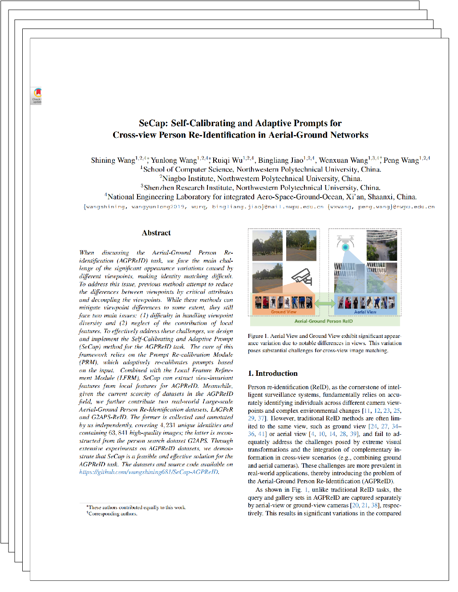

|
School of Computer Science, Northwestern Polytechnical University, China
Ningbo Institute, Northwestern Polytechnical University, China
Shenzhen Research Institute, Northwestern Polytechnical University, China
National Engineering Laboratory for integrated Aero-Space-Ground-Ocean, Xi'an, Shaanxi, China
|
|
When discussing the Aerial-Ground Person Re-identification (AGPReID) task,
we face the main challenge of the significant appearance variations caused by different viewpoints,
making identity matching difficult. To address this issue, previous methods attempt to reduce the
differences between viewpoints by critical attributes and decoupling the viewpoints.
While these methods can mitigate viewpoint differences to some extent, they still face two main issues:
(1) difficulty in handling viewpoint diversity and (2) neglect of the contribution of local features.
To effectively address these challenges, we design and implement the Self-Calibrating and Adaptive Prompt
(SeCap) method for the AGPReID task. The core of this framework relies on the Prompt Re-calibration Module
(PRM), which adaptively re-calibrates prompts based on the input. Combined with the Local Feature Refinement
Module (LFRM), SeCap can extract view-invariant features from local features for AGPReID. Meanwhile, given the
current scarcity of datasets in the AGPReID field, we further contribute two real-world Large-scale Aerial-Ground
Person Re-Identification datasets, LAGPeR and G2APS-ReID. The former is collected and annotated by us independently,
covering $4,231$ unique identities and containing $63,841$ high-quality images; the latter is reconstructed from the
person search dataset G2APS. Through extensive experiments on AGPReID datasets, we demonstrate that SeCap is a
feasible and effective solution for the AGPReID task.
|
|
Dataset records are made available to researchers only after the receipt and acceptance of
a completed and signed Database Release Agreement.
[Data Release Protocol]
Please submit requests for the dataset unless otherwise indicated: wangshining_wsn@163.com or wangshining@mail.nwpu.edu.cn
|
|
To expand the datasets available for the AGPReID task,
we contribute the LAGPeR and G2APS-ReID datasets.
The LAGPeR dataset is independently collected, annotated, and partitioned by us,
and it includes data from 21 cameras, 7 scenes, and 3 perspectives
(with ground perspectives divided into oblique and frontal views).
The G2APS-ReID dataset is reconstructed from the large-scale person search dataset G2APS.
Since the original G2APS dataset only considers retrieval tasks from ground to aerial view,
which do not fully meet the requirements of the AGPReID task, we re-partition the G2APS.
|
|
We proposes an AGPReID framework named SeCap,
which self-calibrates and adaptively generates prompts based on the inputs
for cross-view person re-identification. This framework adopts an encoder-decoder
transformer architecture. The encoder employs the View Decoupling Transformer (VDT) for
viewpoint decoupling, while the decoder further decodes local features using the view-invariant features.
Specifically, the decoder comprises the Prompt Re-calibration Module (PRM) and the Local Feature Refinement
Module (LPRM). To address the challenge of viewpoint diversity, we design the PRM
to re-calibrate prompts based on the input adaptively. It dynamically generates and self-calibrates
prompts that closely align with the current viewpoint, thus adapt to different viewpoints. To fully
leverage the role of local features, we design the LPRM for local feature refinement.
This module uses re-calibrated prompts and employs the to-way attention mechanism to synchronously
update various features, thereby learning view-invariant information from local features.
|
|
SeCap Overall Framework
|
|
The overall framework of SeCap adopts an encoder-decoder transformer architecture.
The encoder is the view decoupling transformer (VDT).
In contrast to the conventional ViT, our approach incorporates the View token and performs hierarchical
decoupling of the Cls token at each layer, effectively segregating view-related and
view-invariant features within the Cls token, while extracting local features from the input.
The decoder comprises the Prompt Re-calibration Module (PRM) and the Local Feature Refinement Module (LFRM).
The PRM adaptively generates and re-calibrates prompts for different viewpoints based on the current viewpoint
information. Concurrently, the LFRM utilizes the re-calibrated prompts from the PRM to decode the local features.
|
|  |
SeCap: Self-Calibrating and Adaptive Prompts for Cross-view Person Re-Identification in Aerial-Ground Networks
Shining Wang*, Yunlong Wang*, Ruiqi Wu, Bingliang Jiao, Wenxuan Wang†, Peng Wang *Equal contribution; †Corresponding author. CVPR 2025, HighLight [Paper] [Bibtex] [arXiv] [GitHub] |
|
Comparison Results
|
|
The experiment results of our SeCap and other methods under various test modes of LAGPeR and G2APS-ReID datasets.
Summarily, our proposed SeCap outperforms other state-of-the-art methods on both two datasets.
|
Acknowledgements
The website is modified from this template.
|